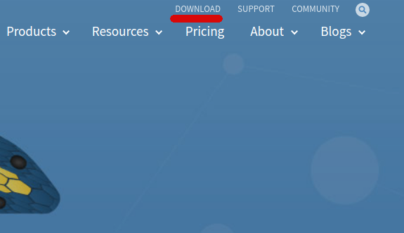
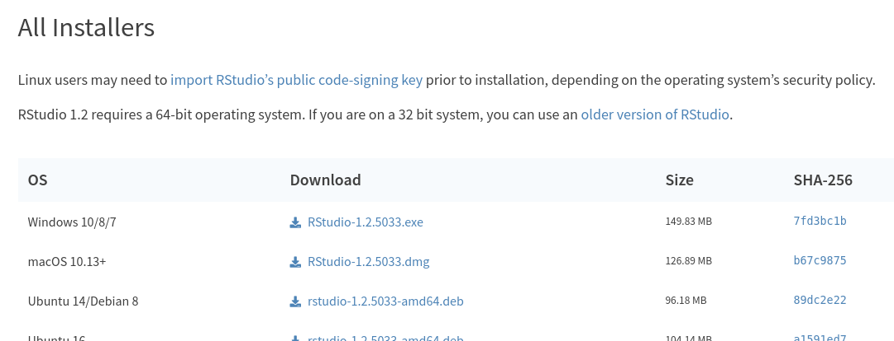
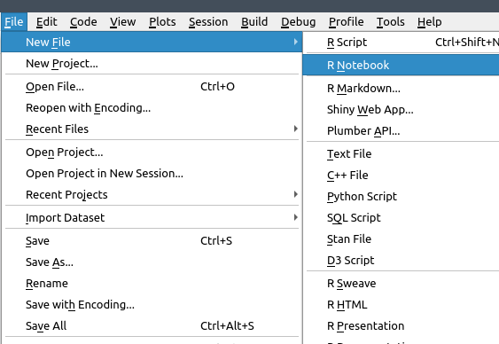
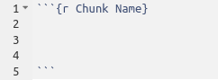

- Navegate to rstudio.com. This is the primary host for R Studio.
- Click 'Download' in the top right corner. 
- Click to download the Open Source version of R Studio.
- Select and download the version of R Studio for your computer under the header 'All Installers' 
- Lastly, run in the installer.
- If it works, when you launch R Studio, you should be greated by the homepage.
- Click on 'file' in the top-left corner
- Click on 'new file'
- Click on 'R Notebook' 
Like everything in R Studio there is multiple ways of doing things. There are at least 3 different ways to make a new Notebook, and this is just 1 of them. Never be afraid to expirment and use which ever method you like best. R Studio is a tool designed to be versitile and customizeable. You also might notice some exaple text in your Notebook when you first create it. Feel free to delete it all. You can disable this in the R Studio Settings.
To create a chunk the format is as follows. Notice that the charcters that comes before the brackets are the ` characters, also known as the grave accent not a single quote. The key for that above the tab key on most keyboards. The 'r' in the bracket says the programing language in the chunk is r (you can use python and other simlar langages in an R notebook too) and the everything that follows the r in the backets is the chunk name, this can be as short or as long as you want. You close a chunk with 3 more grave accents
- To install the package, first you need to know what package has what you need. Ussualy a quick search on the internet can help you figure this out. For this example we will be adding the package 'XGBoost'
- Start by going over the the right menu of R Studio and make sure the tab 'Packages' is open.
- Then click 'Install Packages'
- Type the name of package into the textbox and make sure that 'Install Dependencies' is clicked.
- Click Install. Then wait.
- Once it is done downloading, you need to activate it. There is two ways to do this. The first is under the packages tab, find the package in the list and just check the box next to the name. This presents with two issues, packages don't automatically load when you start R Studio so you would have to do this every time, and if you send your code to another programer, they won't know what packages you use. That is why you should use the 'library()' function. At the start of each chunk of code add the line 'library(package1,package2,...)' and list the packages you need. This will load the packages and let others know they need to install them if they are missing.